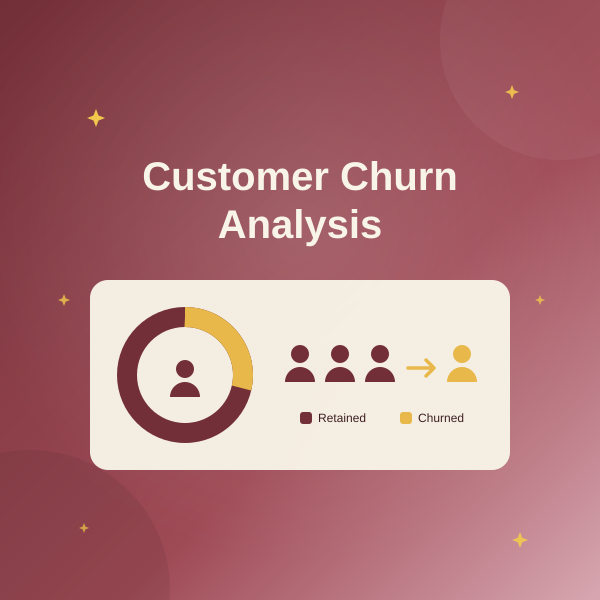

Customer Churn Analysis & Retention Insights
- Built an end-to-end churn analytics pipeline in Python and SQL across 3 SQLite tables, measuring 12 KPIs including 28.6% churn, 18.7% revenue loss and Rs. 2,047 CLTV lost.
- Found the key churn drivers: monthly-contract customers churned 6.7× more than annual ones, and escalations correlated strongly with churn (r = 0.77).